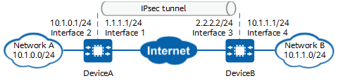

Example for Establishing an IPsec Tunnel Using an IPsec Profile (Through PSK Authentication)
Networking Requirements
In Figure 1, networks A and B connect to the Internet through DeviceA and DeviceB respectively, and there are reachable routes between the two devices. The two devices establish an IPsec tunnel using an IPsec profile through tunnel interfaces. The two ends of the tunnel use PSK authentication to ensure secure transmission of data flows that are diverted to the tunnel through static routes.

In this example, interface 1 and interface 2 represent 10GE 0/0/1 and 10GE 0/0/2 on DeviceA, and interface 3 and interface 4 represent 10GE 0/0/1 and 10GE 0/0/2 on DeviceB.

Item |
Data |
|---|---|
DeviceA |
Interface: 10GE 0/0/1 IP address: 1.1.1.1/24 |
Interface: 10GE 0/0/2 IP address: 10.1.0.1/24 |
|
Tunnel interface configuration Encapsulation protocol: IPsec Source IP address: 1.1.1.1 Destination IP address: 2.2.2.2 IP address of the interface: any IP address that is not in use |
|
IPsec profile configuration Authentication mode: PSK authentication PSK: YsHsjx_202206 Local ID: IP address Remote ID: IP address |
|
DeviceB |
Interface: 10GE 0/0/1 IP address: 2.2.2.2/24 |
Interface: 10GE 0/0/2 IP address: 10.1.1.1/24 |
|
Tunnel interface configuration Encapsulation protocol: IPsec Source IP address: 2.2.2.2 Destination IP address: 1.1.1.1 IP address of the interface: any IP address that is not in use |
|
IPsec profile configuration Authentication mode: PSK authentication PSK: YsHsjx_202206 Local ID: IP address Remote ID: IP address |
Configuration Roadmap
The tunnel negotiation parameter settings on DeviceA and DeviceB must be the same.
This example uses default security algorithms of IPsec.
For security purposes, you are advised not to use the weak security algorithm or weak security protocol of this feature. If you must use such a weak security algorithm or protocol, run the install feature-software WEAKEA command to install the weak security algorithm or protocol feature package WEAKEA.
- Configure interfaces.
- Configure a static route to divert tunnel negotiation packets.
- Configure an IPsec tunnel interface, divert encrypted data packets to the tunnel interface through a static route, and apply an IPsec profile to the tunnel interface.
Procedure
- Configure public and private network interfaces on DeviceA.
# Configure the public network interface 10GE 0/0/1.
<HUAWEI> system-view [HUAWEI] sysname DeviceA [DeviceA] interface 10ge 0/0/1 [DeviceA-10GE0/0/1] undo portswitch [DeviceA-10GE0/0/1] ip address 1.1.1.1 24 [DeviceA-10GE0/0/1] quit
# Configure the private network interface 10GE 0/0/2.
[DeviceA] interface 10ge 0/0/2 [DeviceA-10GE0/0/2] undo portswitch [DeviceA-10GE0/0/2] ip address 10.1.0.1 24 [DeviceA-10GE0/0/2] quit
- Configure a static route to DeviceB to divert tunnel negotiation packets.
Assume that the next-hop IP address of the route from DeviceA to the Internet is 1.1.1.254.
[DeviceA] ip route-static 2.2.2.0 255.255.255.0 1.1.1.254
- Configure an IPsec tunnel interface.
[DeviceA] interface Tunnel 1 [DeviceA-Tunnel1] tunnel-protocol ipsec [DeviceA-Tunnel1] source 1.1.1.1 [DeviceA-Tunnel1] destination 2.2.2.2 [DeviceA-Tunnel1] ip address 172.16.0.1 24 [DeviceA-Tunnel1] quit
- Configure a static route to divert encrypted data packets to the tunnel interface.
[DeviceA] ip route-static 10.1.1.0 24 Tunnel 1
- Configure an IPsec profile.
- Apply the IPsec profile to the tunnel interface.
[DeviceA] interface tunnel 1 [DeviceA-Tunnel1] ipsec profile pro1 [DeviceA-Tunnel1] quit
- Configure public and private network interfaces on DeviceB.
# Configure the public network interface 10GE 0/0/1.
<HUAWEI> system-view [HUAWEI] sysname DeviceB [DeviceB] interface 10ge 0/0/1 [DeviceB-10GE0/0/1] undo portswitch [DeviceB-10GE0/0/1] ip address 2.2.2.2 24 [DeviceB-10GE0/0/1] quit
# Configure the private network interface 10GE 0/0/2.
[DeviceB] interface 10ge 0/0/2 [DeviceB-10GE0/0/2] undo portswitch [DeviceB-10GE0/0/2] ip address 10.1.1.1 24 [DeviceB-10GE0/0/2] quit
- Configure a static route to DeviceA to divert tunnel negotiation packets.
Assume that the next-hop IP address of the route from DeviceB to the Internet is 2.2.2.254.
[DeviceB] ip route-static 1.1.1.0 255.255.255.0 2.2.2.254
- Configure an IPsec tunnel interface.
[DeviceB] interface Tunnel 1 [DeviceB-Tunnel1] tunnel-protocol ipsec [DeviceB-Tunnel1] source 2.2.2.2 [DeviceB-Tunnel1] destination 1.1.1.1 [DeviceB-Tunnel1] ip address 172.16.0.2 24 [DeviceB-Tunnel1] quit
- Configure a static route to divert encrypted data packets to the tunnel interface.
[DeviceB] ip route-static 10.1.0.0 24 Tunnel1
- Configure an IPsec profile.
- Apply the IPsec profile to the tunnel interface.
[DeviceB] interface tunnel 1 [DeviceB-Tunnel1] ipsec profile pro1 [DeviceB-Tunnel1] quit
Verifying the Configuration
<DeviceB> display ike sa
Total number of IKE SA in all CPU : 2
Total number of phase 1 SA in all CPU : 1
Total number of phase 2 SA in all CPU : 1
Flag Description:
RD--READY ST--STAYALIVE RL--REPLACED FD--FADING TO--TIMEOUT
HRT--HEARTBEAT LKG--LAST KNOWN GOOD SEQ NO. BCK--BACKED UP
M--ACTIVE S--STANDBY A--ALONE NEG--NEGOTIATING
Slot 0, cpu 0 IKE SA information :
Number of IKE SA : 2, number of IKE SA1: 1, number of IKE SA2: 1
-----------------------------------------------------------------------------
Conn-ID Peer VPN Flag(s) Phase RemoteType RemoteID
-----------------------------------------------------------------------------
16777239 1.1.1.1/500 RD|ST|A v2:2 IP 1.1.1.1
16777232 1.1.1.1/500 RD|ST|A v2:1 IP 1.1.1.1
-------------------------------------------------------------------------------
<DeviceB> display ipsec sa
Slot 0, cpu 0 ipsec sa information:
===============================
Interface: Tunnel1
===============================
-----------------------------
IPsec profile name: "pro1"
Mode : PROF-ISAKMP
-----------------------------
Connection ID : 83903371
Encapsulation mode: Tunnel
Tunnel local : 2.2.2.2
Tunnel remote : 1.1.1.1
[Outbound ESP SAs]
SPI: 763065754 (0x2d7b759a)
Proposal: ESP-ENCRYPT-AES-GCM-256
SA remaining soft duration (kilobytes/sec): 68785930/1209
SA remaining hard duration (kilobytes/sec): 83885425/1857
Max sent sequence-number: 5885
UDP encapsulation used for NAT traversal: N
SA encrypted packets (number/bytes): 5885/670890
[Inbound ESP SAs]
SPI: 163241969 (0x9badff1)
Proposal: ESP-ENCRYPT-AES-GCM-256
SA remaining soft duration (kilobytes/sec): 67947069/1173
SA remaining hard duration (kilobytes/sec): 83885425/1857
Max received sequence-number: 5885
UDP encapsulation used for NAT traversal: N
SA decrypted packets (number/bytes): 5885/670890
Anti-replay : Enable
Anti-replay window size: 1024
Configuration Scripts
- DeviceA
# sysname DeviceA # ipsec proposal tran1 esp authentication-algorithm sha2-256 esp encryption-algorithm aes-256-gcm-128 # ike proposal 10 encryption-algorithm aes-gcm-256 dh group14 authentication-algorithm sha2-256 authentication-method pre-share integrity-algorithm hmac-sha2-256 prf hmac-sha2-256 # ike peer b pre-shared-key %@%@'OMi3SPl%@TJdx5uDE(44*I^%@%@ ike-proposal 10 # ipsec profile pro1 ike-peer b proposal tran1 # interface 10GE0/0/2 ip address 10.1.0.1 255.255.255.0 # interface 10GE0/0/1 ip address 1.1.1.1 255.255.255.0 # interface Tunnel 1 ip address 172.16.0.1 255.255.255.0 tunnel-protocol ipsec source 1.1.1.1 destination 2.2.2.2 ipsec profile pro1 # ip route-static 2.2.2.0 255.255.255.0 1.1.1.254 ip route-static 10.1.1.0 255.255.255.0 Tunnel1 # return
- DeviceB
# sysname DeviceB # ipsec proposal tran1 esp authentication-algorithm sha2-256 esp encryption-algorithm aes-256-gcm-128 # ike proposal 10 encryption-algorithm aes-gcm-256 dh group14 authentication-algorithm sha2-256 authentication-method pre-share integrity-algorithm hmac-sha2-256 prf hmac-sha2-256 # ike peer a pre-shared-key %@%@W[QD:1tV\'f"!1W&yrX6v$B>%@%@ ike-proposal 10 # ipsec profile pro1 ike-peer a proposal tran1 # interface 10GE0/0/2 ip address 10.1.1.1 255.255.255.0 # interface 10GE0/0/1 ip address 2.2.2.2 255.255.255.0 # interface Tunnel 1 ip address 172.16.0.2 255.255.255.0 tunnel-protocol ipsec source 2.2.2.2 destination 1.1.1.1 ipsec profile pro1 # ip route-static 1.1.1.0 255.255.255.0 2.2.2.254 ip route-static 10.1.0.0 255.255.255.0 Tunnel1 # return